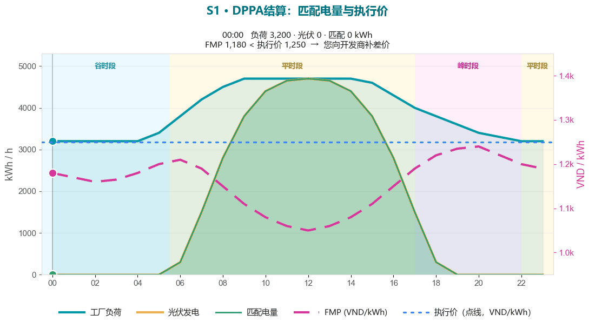
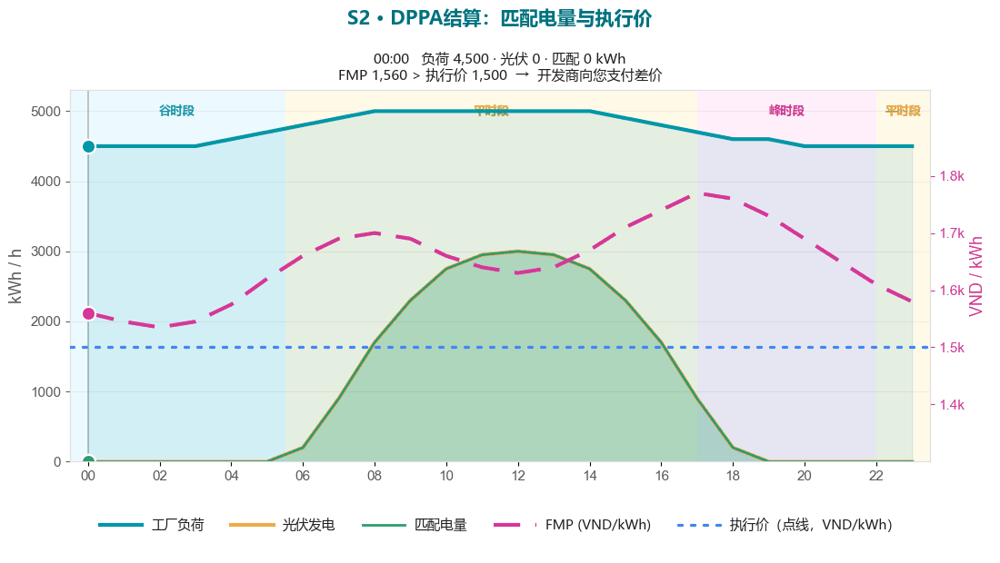
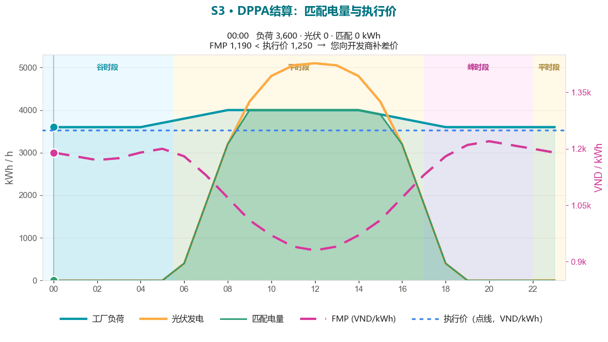

小组工作坊 · 有引导 · ~90 分钟
DPPA 小组工作坊 — 先计算，再谈判
S1 · 匹配 ✓
S2 · 缺口 ✓
S3 · 过剩 ✓
▶ 现场练习
你已看过三个标准情形。现在动手做。在小组中，你们将分为 DPPA 的两方，
手算账单的每一行，用在线工具自检，然后谈判执行价并实时观看 CfD 翻转。
本页是你的流程单；数字写在练习表上。
房间如何运作
每桌 3–5 人。每桌分为两个角色。三个情景中你保持同一角色，然后与一张对手桌进行谈判。
🏭 买方（工厂）
你购买电力。你想要相对 BAU 的最低总成本。
- 计算 C_EVN（第 1–4 行）和 C_KH（CfD 之后）。
- 跟踪实际 VND/kWh，并与零售价 2,204 比较。
- 主张更低的执行价——但要知道开发商必须满足银行可融资条件。
☀️ 开发商（RE GENCO）
你出售电力。你想要一条可融资的收入线。
- 计算电厂收入 = 现货（Q × K_pp × FMP）+ CfD 结算。
- 观察 CfD 符号：低于执行价你收到补差；高于执行价你支付。
- 主张更高的执行价——足以通过银行的 DSCR（模块 4）。
流程安排（~90 分钟）
| 时间 | 环节 | 内容 |
|---|
| 0:00–0:10 | 引入与分角色 | 回顾五行账单和 CfD 符号。分配买方与开发商。 |
| 0:10–0:28 | 第 1 轮 — 匹配 | 手算情景 1，然后在 Workshop 1 核对。 |
| 0:28–0:46 | 第 2 轮 — 缺口 | 手算情景 2，然后在 Workshop 2 核对。 |
| 0:46–1:04 | 第 3 轮 — 过剩 | 手算情景 3，然后在 Workshop 3 核对。 |
| 1:04–1:18 | 谈判 | 买方与开发商商定执行价；在应用中实时结算 CfD。 |
| 1:18–1:30 | 总结 | 跨桌比较执行价与结果；提炼经验教训。 |
唯一规则
先在练习表上手算。只在核对答案时才打开应用。
目的是感受每一行的变动——而不是从屏幕上读一个数字。
第 1 轮 — 匹配 (Q_c = Q_KH = 5,000,000 · FMP 1,150 · 执行价 1,250)

观察 09–15 时：负荷与光伏重叠（匹配），FMP 全天位于 1,250 执行价之下。
你的任务 ~18 分钟
- 买方：在练习表 S1 上填第 1–4 行，求和得 C_EVN，再加 CfD 得 C_KH。
- 开发商：计算现货收入（5,000,000 × 1.008 × 1,150）和 CfD；求和得电厂收入。
- 商定 CfD 流向及原因。记下实际 VND/kWh。
- 核对：打开 dppa-case.web.app → Workshop 1。你的 C_KH 是否吻合？
卡住了可参考：情景 1 课程。
第 2 轮 — 缺口 (Q_c 8,000,000 · Q_KH 9,000,000 · FMP 1,600 · 执行价 1,500)

负荷全天高于光伏（缺口）；FMP 位于 1,500 执行价之上 → CfD 反向。
你的任务 ~18 分钟
- 买方：这次第 4 行回归——1,000,000 kWh 缺口按零售价 2,204。求 C_EVN，再减去负的 CfD 得 C_KH。
- 开发商：现货收入按 8,000,000 × 1.008 × 1,600；CfD 现在让你付出 800M。电厂净收入是多少？
- 记下相对第 1 轮的两点不同：零售行回归，CfD 翻转方向。
- 核对：Workshop 2 — C_EVN 19,628,262,400，C_KH 18,828,262,400。
参考：情景 2 课程。
第 3 轮 — 过剩 (Q_KH 5,000,000 · 发电 6,500,000 · FMP 1,100 · 执行价 1,250)

中午光伏升至负荷之上（过度发电）；1,500,000 kWh 过剩只为开发商带来现货收入。
你的任务 ~18 分钟
- 买方：账单只对你消费的 5,000,000 结算——第 4 行再次为 0。求 C_EVN 和 C_KH。
- 开发商：计算 1,500,000 kWh 过剩的现货价值——以及你在其上放弃的 CfD。谁承担过度发电风险？
- 在桌上辩论：合约规模是否本该更小？什么条款保护超额一方？
- 核对：Workshop 3 — C_EVN 8,304,644,000，C_KH 9,054,644,000。
参考：情景 3 课程。
谈判 (~14 分钟)
现在与一张对手桌对阵。以情景 1 的电量（5,000,000 kWh，FMP ~1,150）为起点。
每一方提出一个执行价并为其辩护：
🏭 买方开低
接近或低于 FMP 的执行价可最小化补差——但没有银行会融资。
☀️ 开发商开高
能通过 DSCR 的执行价可融资——但低于 BAU 的买方不会签字。
现场结算
- 商定一个候选执行价。手算 CfD：
(执行价 − 1,150) × 5,000,000。流向哪边？
- 打开 dppa-case.web.app → Workshop 1，然后将执行价滑块拖到你的数字。实时观看 C_KH 和 CfD 符号变化。
- 把执行价上下推动。找到 CfD 过零（执行价 = FMP）之处——以及买方在多年面板上首次胜过 BAU 之处。
- 把商定的执行价和由此得到的 C_KH 写到练习表的谈判行。
总结 (~12 分钟)
跨桌比较
- 各桌落在哪个执行价？分布有多宽？
- 在 S1/S2/S3 中，哪一行最出乎意料——零售缺口，还是不产生价值的过剩？
- 在哪个情景中 CfD 保护了工厂，又在哪个情景中工厂需付出？
- 哪一道关卡最难满足——买方（≤ BAU）、卖方（IRR）、还是银行（DSCR）？（模块 4。）
检验你的直觉
1. 提高执行价会使买方的 C_KH ___
CfD = (执行价 − FMP) × Q。执行价越高，正的 CfD 越大（或负的越小），故工厂付得越多——C_KH 上升。
2. CfD 恰好过零当 ___
CfD = (执行价 − FMP) × Q = 0 当执行价 = FMP。低于它工厂补差；高于它开发商支付。
资料
练习表：可打印计算表（S1/S2/S3 + 谈判） ·
情景课程：S1 · S2 ·
S3 · 符号：术语表 ·
在线工具：dppa-case.web.app。
引导者：流程安排、答案和总结脚本在引导者工具包
（facilitator/dppa-workshop-facilitator-guide.md）中——不在本学员页面上。